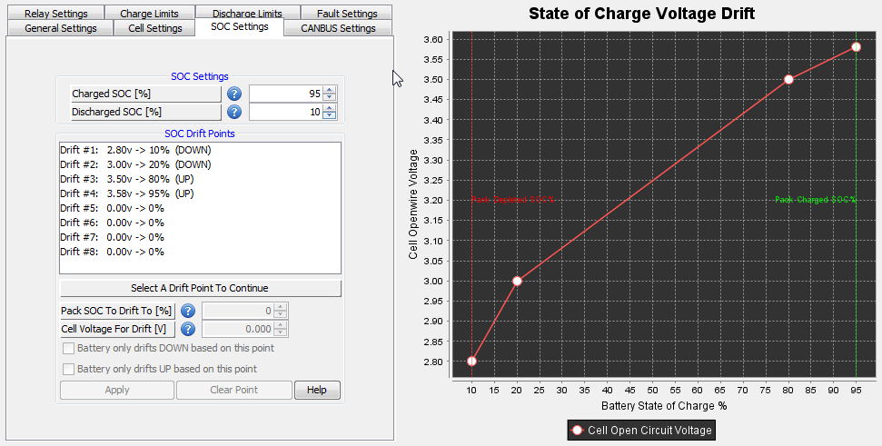

These settings deal with the handling of State of Charge (SOC) calculations and determinations. These include setting voltage points for SOC Voltage Drift and the points at which the pack is fully charged or discharged.
Associated Parameters:
| < Minimum Relay Restore Time | Charged SOC > |